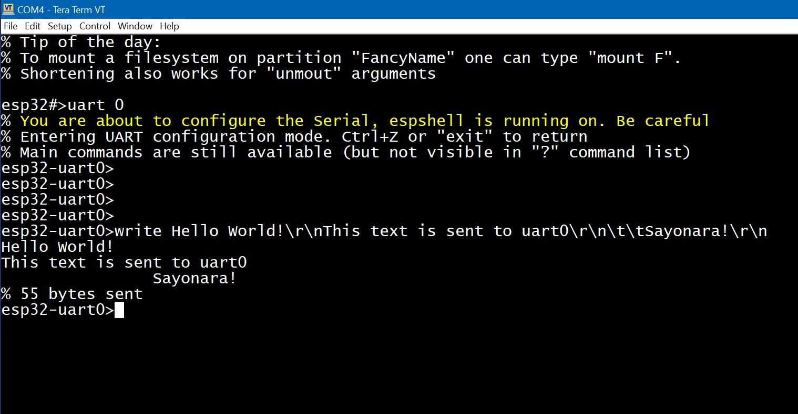

The ESP32 has up to 3 hardware UARTs depending on the model (the basic ESP32 has 3 UARTs, while the ESP32-S2 has two). UART0 is used as the primary input/output port for both programming the chip and sketch I/O. In the Arduino framework, it is referenced as Serial0 or Serial. (On USB-OTG-enabled boards, the USB port is used as the primary I/O.)
When ESPShell starts, it waits for the sketch to initialize Serial. This is typically done in setup(), like this:
void setup() {
....
Serial.begin(115200);
....
}
Once ESPShell detects that Serial is up and running, it begins reading and executing user commands.
The main idea is to simplify debugging of UART-to-UART communication between the ESP32 and another device (e.g., a GSM modem or GPS module). UART commands allow you to initialize a UART interface on arbitrary pins and communicate with the connected device.
In conjunction with the "suspend" command, this can also be used to reconfigure the UART used by the sketch (e.g., to adjust UART speed or change pin numbers).
UARTs are accessed using the "uart UART_NUMBER" command. After executing this command, the ESPShell prompt changes from "esp32#>" to "esp32-uartX>" (where X is the UART number), indicating that you are in UART configuration mode. Entering "?" and pressing <Enter> will show a full list of available commands:
esp32#>ua 1 esp32-uart1>? % Enter "? command" to get details about the command. % List of available commands: % % "?" : Show the list of available commands % "up" : Initialize UART (pins/speed) % "baud" : Set baud rate % "down" : Shut down % "read" : Read data from UART % "tap" : Talk to UART device % "write" : Send bytes over this UART % "exit" : Exit esp32-uart1>
The output above shows that there are 6 UART-specific commands available, along with 2 common commands ("?" and "exit"). The question mark prints the command list, and "exit" (or Ctrl+Z) exits the UART configuration mode.
You can also use global commands from within the UART context. For example, the "pin" command works inside "esp32-uart1>" as well.
| Command | Description |
up |
up RX_PIN TX_PIN SPEED [BITS [no|even|odd [1|1.5|2]]] Initializes the UART. If the UART is already up, this command does nothing. The command has 3 mandatory parameters (RX pin, TX pin, baud rate) and 3 optional ones (data bits, parity, stop bits). Baud rate can later be changed using the "baud" command. No other UART-specific commands will work until "up" completes successfully. Default values for optional parameters are: 8 data bits, no parity, 1 stop bit. Valid BITS values: 5, 6, 7 or 8 bits. Parity: "no", "even", or "odd". Stop bits: 1, 1.5, or 2. Example: Initialize UART2 on pins 18 and 19 at 115200 baud: esp32#>uart 2 esp32-uart2>up 18 19 115200 Example: Initialize UART2 on pins 18 and 19 at 9600 baud, 8 data bits, 1 stop bit, "even" parity: esp32#>uart 2 esp32-uart2>up 18 19 9600 8 even 1 |
down |
down Shuts down the previously initialized UART. If the UART is not up, the command has no effect. Note: Your sketch may still be reading/writing on the UART when you run "down". Use the global "suspend" command to pause the sketch and avoid undefined behavior. |
baud |
baud SPEED Changes the UART speed. Changing the baud rate on UART0 may cause you to lose connection with your serial monitor. Adjust its baud rate accordingly. |
read |
read Reads all bytes available at the moment of execution. Printable characters (including \t, \n, \r) are shown as-is. Non-printable characters are shown as "\0xAB", where AB is the hex value. |
write |
write TEXT1 TEXT2 ... TEXTn Sends strings of bytes over UART. You can use printable characters or special sequences: "\n", "\r", "\t", "\\" for LF, CR, TAB, and backslash. Arbitrary bytes can be sent using \AB where AB is the hex value. Multiple spaces are compressed to one (commands "write Hello World!" and "write Hello World!" are equivalent.). To send several spaces, use "\20" (ASCII 32): : "write Hello\20\20\20World!" Using command "write" on UART0 sends data directly to your serial monitor:
 Example: Communicate with a SIMCOM SIM7600E modem on pins 21 (RX) and 22 (TX): esp32#>uart 2 esp32-uart2>up 21 22 115200 esp32-uart2>write \ff\ff\CC\r\n ← Send junk bytes: ignored by the modem 5 bytes sent esp32-uart2>write ATI\r\n ← Send ATI command 5 bytes sent esp32-uart2>read ← Read reply ATI Manufacturer: SIMCOM INCORPORATED Model: SIMCOM_SIM7600E Revision: SIM7600M21-A_V1.1 IMEI: 861005075537800 +GCAP: +CGSM OK 137 bytes read This example shows how to set up a UART and send the "ATI" command to a device on UART2. The first "write" sends junk, the second sends a valid command. "read" retrieves the modem's response. |
If you have a GSM/LTE modem connected to your ESP32's UART, you may want to send AT commands. Or maybe you have a GPS module and want to monitor its NMEA output. Or perhaps two ESP32s are connected via UART, both running ESPShell, and you'd like to run remote shell commands.
All this is possible using the "tap" command, which creates a bridge between the user terminal (e.g., UART0) and another UART:
| Command | Description |
tap |
tap Bridges the user terminal to the connected UART device. All output from the UART is forwarded to the user, and all user input is sent to the UART. This is especially useful for debugging modems with AT commands. Note: Arduino Serial Monitor does not support pressing Ctrl+C to exit tap mode. Example: Communicate with a SIM7600E modem on pins 18 (RX) and 19 (TX), send the ATI command, and exit: esp32#>uart 1 esp32-uart1>up 18 19 115200 esp32-uart1>tap Tapping to UART1, CTRL+C to exit ATI ← Sent by user Manufacturer: SIMCOM INCORPORATED ← This and below: a modem reply Model: SIMCOM_SIM7600E Revision: SIM7600M21-A_V1.1 IMEI: 861005075537800 +GCAP: +CGSM OK Exit ← Ctrl+C pressed esp32#> |